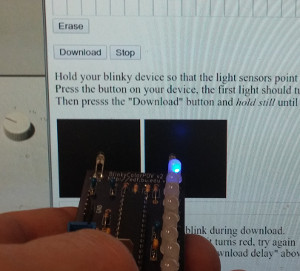

| Select a color: | Current: | (Change text color by selecting a new color and clicking on the letter whose color you wish to change) |
Enter text in the box below then press Enter button
Download delay: debug:
|  |
Hold your blinky device so that the light sensors point at the two black squares below.
Press the button on your device, the first light should turn blue Then presss the "Download" button and hold still until the blinking stops. Notes: The first LED should blink during download.
|